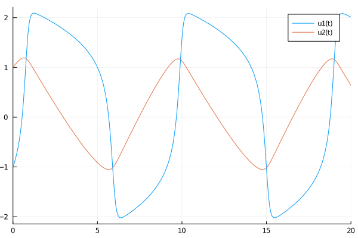
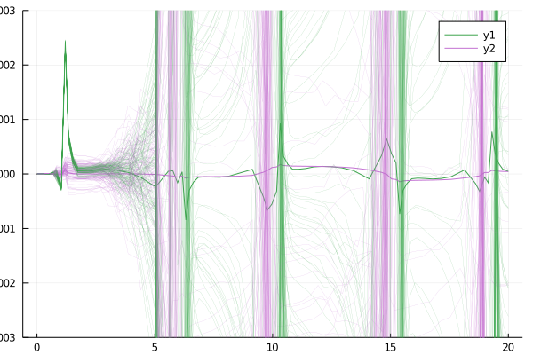
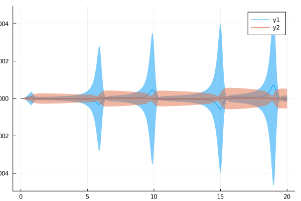

Comparison to ProbInts
The DifferentialEquations.jl documentation contains a section about Uncertainty Quantification. It describes the ProbInts method for quantification of numerical uncertainty, and provides an extension of ProbInts to adaptive step sizes.
In this example, we want to compare the uncertainty estimates of Tsit5+AdaptiveProbInts to the posterior computed with the EK1.
1. Problem definition: FitzHugh-Nagumo
using ProbNumDiffEq
using ProbNumDiffEq: remake_prob_with_jac, stack
using DifferentialEquations
using DiffEqUncertainty
using Statistics
using Plots
function fitz!(du,u,p,t)
V,R = u
a,b,c = p
du[1] = c*(V - V^3/3 + R)
du[2] = -(1/c)*(V - a - b*R)
end
u0 = [-1.0;1.0]
tspan = (0.0,20.0)
p = (0.2,0.2,3.0)
prob = ODEProblem(fitz!,u0,tspan,p)
prob = remake_prob_with_jac(prob)High accuracy reference solution:
appxsol = solve(remake(prob, u0=big.(prob.u0)), abstol=1e-20, reltol=1e-20)
plot(appxsol)/home/runner/.julia/packages/GR/G9I5v/src/../deps/gr/bin/gksqt: error while loading shared libraries: libQt5Widgets.so.5: cannot open shared object file: No such file or directory connect: Connection refused GKS: can't connect to GKS socket application GKS: Open failed in routine OPEN_WS GKS: GKS not in proper state. GKS must be either in the state WSOP or WSAC in routine ACTIVATE_WS

2. ProbInts
Uncertainty quantification of Tsit5 with AdaptiveProbInts:
cb = AdaptiveProbIntsUncertainty(5)
ensemble_prob = EnsembleProblem(prob)
sol = solve(prob, Tsit5())
sim = solve(ensemble_prob, Tsit5(), trajectories=100, callback=cb)
p = plot(sol.t, stack(appxsol.(sol.t) - sol.u), color=[3 4], ylims=(-0.003, 0.003), ylabel="Error")
errors = [(a.t, stack(appxsol.(a.t) .- a.u)) for a in sim.u]
for e in errors
plot!(p, e[1], e[2], color=[3 4], label="", linewidth=0.2, linealpha=0.5)
end/home/runner/.julia/packages/GR/G9I5v/src/../deps/gr/bin/gksqt: error while loading shared libraries: libQt5Widgets.so.5: cannot open shared object file: No such file or directory connect: Connection refused GKS: can't connect to GKS socket application GKS: Open failed in routine OPEN_WS GKS: GKS not in proper state. GKS must be either in the state WSOP or WSAC in routine ACTIVATE_WS

3. EK1
Uncertainties provided by the EK1:
sol = solve(prob, EK1())
plot(sol.t, stack(appxsol.(sol.t) - sol.u), ylabel="Error")
plot!(sol.t, zero(stack(sol.u)), ribbon=3stack(std(sol.pu)), color=[1 2], label="")/home/runner/.julia/packages/GR/G9I5v/src/../deps/gr/bin/gksqt: error while loading shared libraries: libQt5Widgets.so.5: cannot open shared object file: No such file or directory connect: Connection refused GKS: can't connect to GKS socket application GKS: Open failed in routine OPEN_WS GKS: GKS not in proper state. GKS must be either in the state WSOP or WSAC in routine ACTIVATE_WS

Verdict: The provided credible bands are more calibrated!